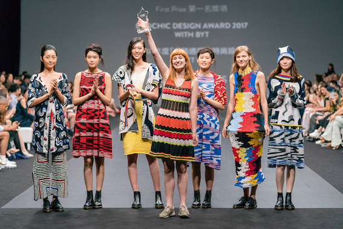
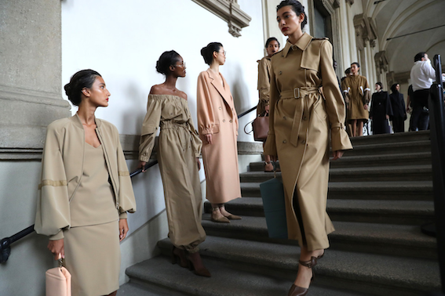

Ella Ollikainen & Elli Naukkarinen
Vastuullinen muodikkuus viittaa muotialan pyrkimykseen integroida eettisiä, sosiaalisia ja ympäristöllisiä näkökohtia tuotantoketjuunsa ja liiketoimintaansa. Se on reaktio perinteisen muotiteollisuuden negatiivisiin vaikutuksiin, kuten ympäristön saastuminen, epäeettiset työolosuhteet ja nopeasti vaihtuvat trendit, jotka kannustavat liialliseen kulutukseen.
Vastuullinen muodikkuus pyrkii edistämään kestävää kehitystä ja sosiaalista oikeudenmukaisuutta. Eettinen tuotanto on yksi keskeinen näkökohta, jossa vastuulliset muotibrändit varmistavat, että heidän vaatteidensa valmistuksessa noudatetaan korkeimpia eettisiä standardeja, kuten reilut työolosuhteet, oikeudenmukainen palkka ja ihmisoikeuksien kunnioittaminen. Toinen merkittävä osa on ympäristöystävällisyys. Vastuulliset muotibrändit pyrkivät vähentämään ympäristövaikutuksiaan käyttämällä kestäviä materiaaleja, säästämällä vettä, suosimalla kierrätettyjä tai kierrätettäviä materiaaleja ja toteuttamalla energiatehokasta tuotantoa.
Suunnittelu on myös avainasemassa, kun brändit pyrkivät luomaan vaatteita, jotka eivät ainoastaan seuraa lyhytaikaisia trendejä vaan kestävät aikaa sekä tyylin että laadun suhteen.
Vastuullinen kulutuskäyttäytyminen korostaa kuluttajien vastuuta omasta kulutuskäyttäytymisestään. Se voi sisältää vähemmän ostamista, vaatteiden kierrättämistä ja yleisesti ottaen tietoista päätöstä tukea vastuullisia brändejä.
Muodikkuuden kasvava suosio osoittaa muotialan pyrkimyksen liittyä kestävään kehitykseen ja vastuulliseen liiketoimintaan. Monet kuluttajat ovat alkaneet tiedostaa vaatteiden tuotantoprosessin vaikutukset ympäristöön ja yhteiskuntaan, ja he etsivät vaihtoehtoja, jotka ovat eettisempiä ja kestävämpiä.
Listasimme vastuullisimmat ja vastuuttomimmat muotimerkit
Patagonia: Tämä ulkoiluvaatemerkki on sitoutunut ympäristönsuojeluun ja eettiseen tuotantoon. He ovat esimerkiksi käynnistäneet kampanjoita kestävän kulutuksen puolesta ja tarjoavat kierrätettyjä materiaaleja.
Eileen Fisher: Tämä brändi keskittyy ympäristöystävällisiin materiaaleihin ja reiluihin työolosuhteisiin. He ovat myös edelläkävijöitä kierrätetyn vaatteen markkinoilla.
Veja: Veja on kestävän kehityksen tennarimerkki, joka käyttää ekologisia materiaaleja ja tukee reilua kauppaa.
Fast Fashion -brändit (kuten Shein, H&M, Zara, ja Forever 21): Näillä brändeillä on usein lyhyt tuotantosykli, joka kannustaa jatkuvasti uusien trendien luomiseen ja edistää liiallista kulutusta. Lisäksi ne ovat saaneet arvostelua epäeettisistä työoloista ja ympäristövaikutuksista.
Primark: Vaikka Primark tarjoaa edullisia vaatteita, se on saanut kritiikkiä epäeettisistä tuotantomenetelmistä ja huonosta työolojen valvonnasta toimitusketjussaan.
Victoria's Secret: Tätä alusvaatteisiin erikoistunutta brändiä on arvosteltu epäeettisistä työolosuhteista ja myös siitä, että se ei ole pysynyt mukana kestävän muodin liikkeessä.
On tärkeää tutkia ja tarkistaa brändien vastuullisuustiedot erikseen, sillä muotiyritykset voivat tehdä parannuksia ja muutoksia toimintatapoihinsa. Useat organisaatiot ja sertifiointijärjestelmät, kuten esimerkiksi Fair Trade voi tarjota lisätietoa brändien vastuullisuudesta.
Redress Design Award on maailman suurin kestävän muotisuunnittelun kilpailu, joka keskittyy uusiokäytön edistämiseen muotialalla. Kilpailun tavoitteena on tukea ja nostaa esiin lahjakkaita suunnittelijoita, jotka sitoutuvat kestävään muotisuunnitteluun ja vähentämään muotiteollisuuden ympäristövaikutuksia.
Design Award pyrkii kasvattamaan tietoisuutta tekstiilijätteen valtavasta määrästä ja kannustamaan suunnittelijoita luomaan vaatteita kestävistä materiaaleista tai kierrätetyistä tekstiileistä. Kilpailu tarjoaa osallistujille mahdollisuuden saada arvokasta kokemusta kestävän muotisuunnittelun parissa ja edistää alan muutosta kohti kestävämpiä käytäntöjä.
Voittajat palkitaan useilla mahdollisuuksilla, kuten mentoroinnilla ja tilaisuudella esitellä töitään kansainvälisellä areenalla. Redress Design Award on tärkeä aloite, joka korostaa kestävän muodin merkitystä ja innostaa seuraavaa sukupolvea suunnittelijoita vaikuttamaan positiivisesti muotiteollisuuteen.
Jutun alkuun: Vastuullinen muodikkuus